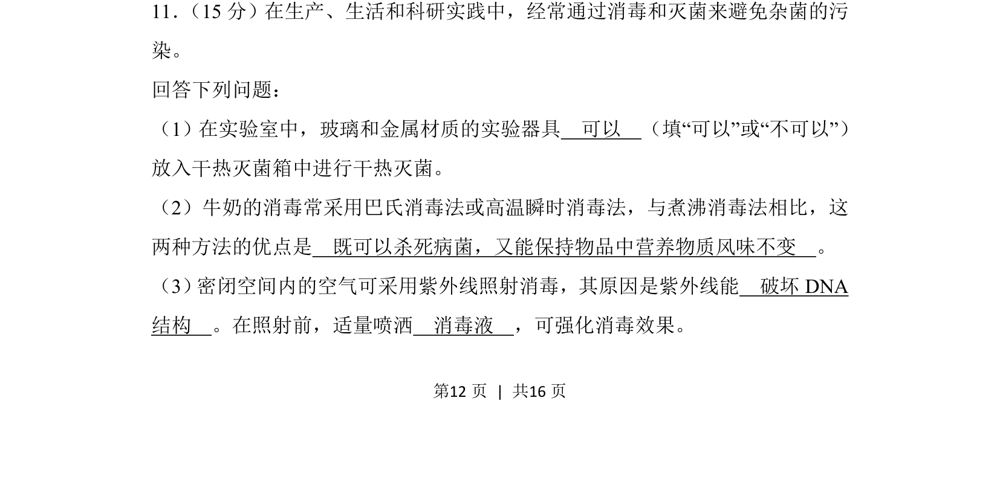
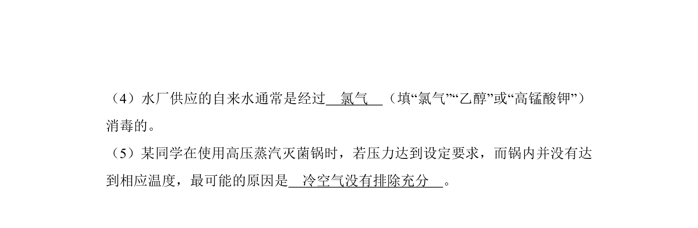
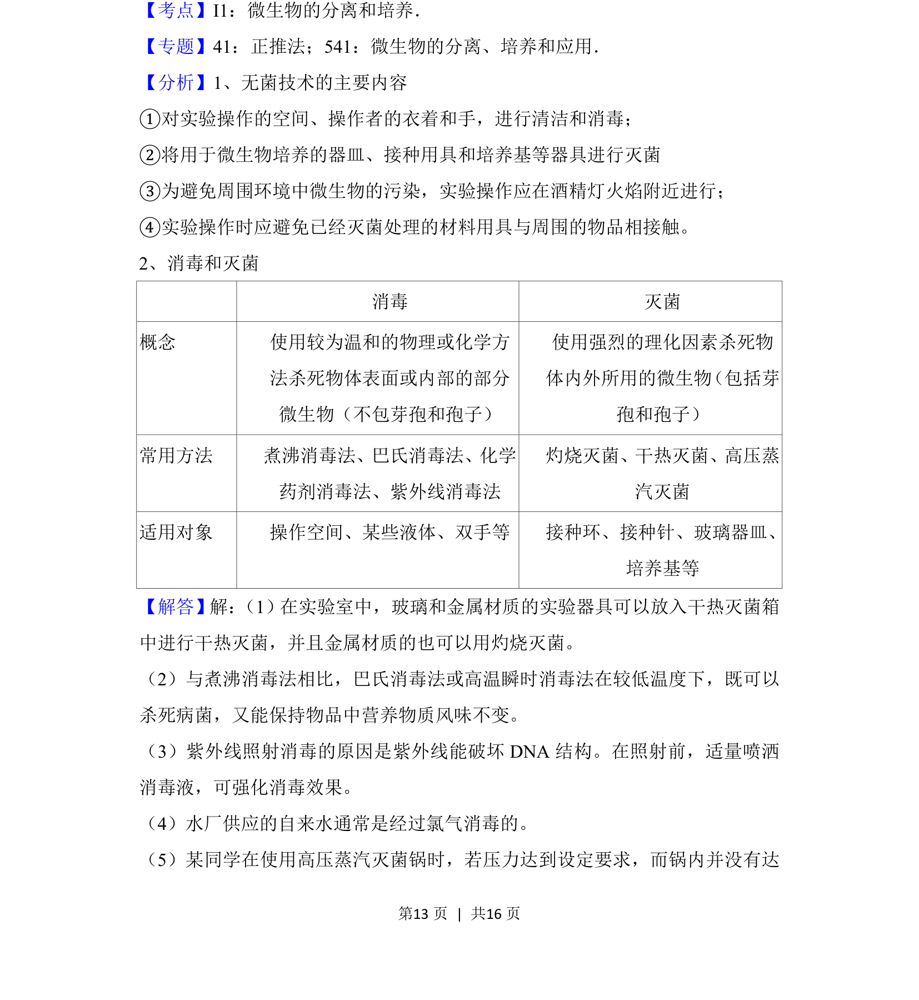
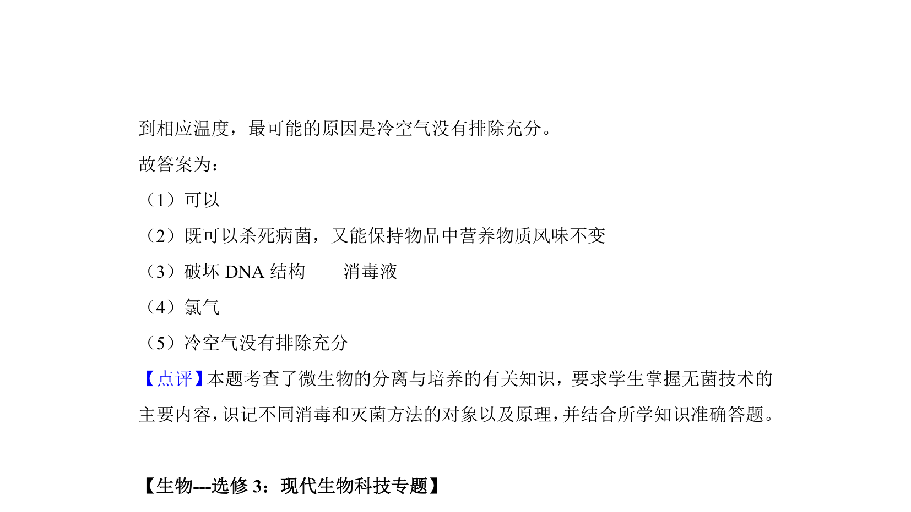

考点：灭菌与消毒技术 微生物培养 干热灭菌 巴氏消毒法


本题考查实验室灭菌与消毒方法的应用，包括干热灭菌、牛奶消毒及紫外线消毒原理。


📄 原 PDF 第 12 页：
素材/真题/吉林/2008-2024·（吉林）生物高考真题/2018年高考生物试卷（新课标Ⅱ）（解析卷）.pdf
11． （15分）在生产、生活和科研实践中，经常通过消毒和灭菌来避免杂菌的污 染。 回答下列问题： （1）在实验室中，玻璃和金属材质的实验器具 可以 （填“可以”或“不可以”） 放入干热灭菌箱中进行干热灭菌。 （2）牛奶的消毒常采用巴氏消毒法或高温瞬时消毒法，与煮沸消毒法相比，这 两种方法的优点是 既可以杀死病菌，又能保持物品中营养物质风味不变 。 （3） 密闭空间内的空气可采用紫外线照射消毒，其原因是紫外线能 破坏DNA 结构 。在照射前，适量喷洒 消毒液 ，可强化消毒效果。